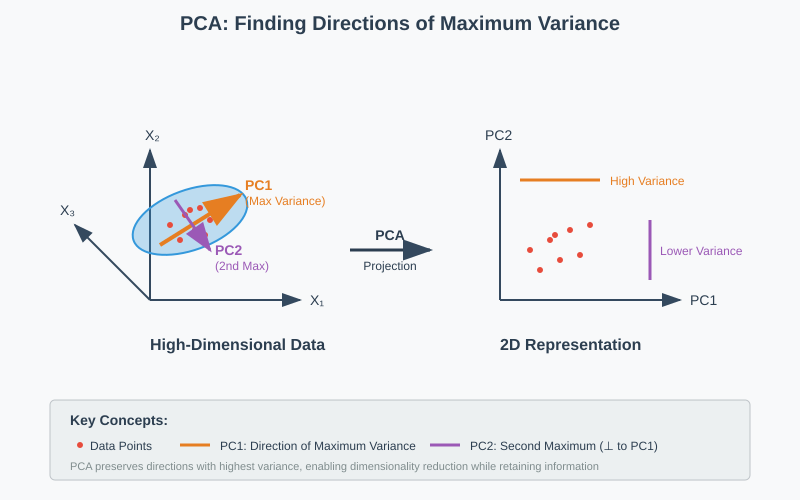
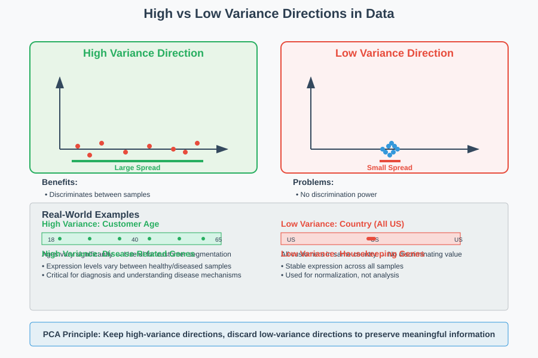
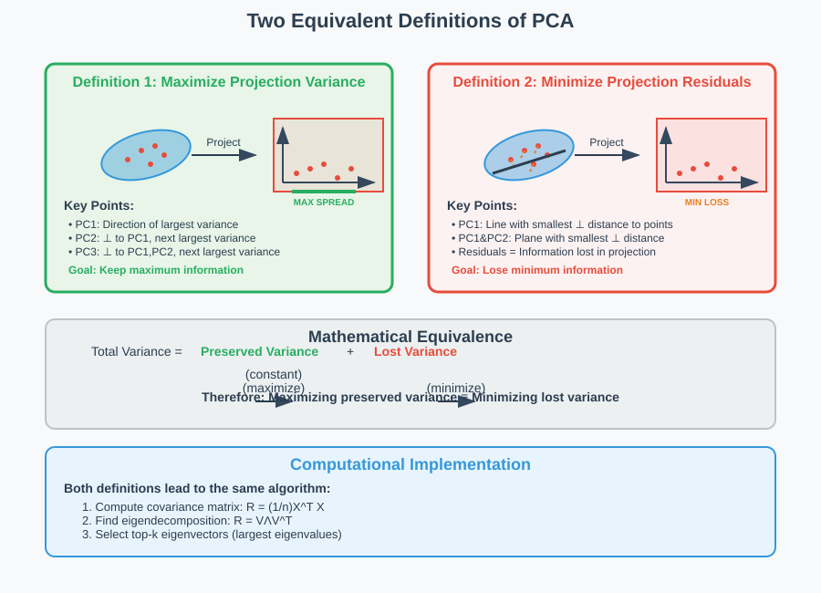
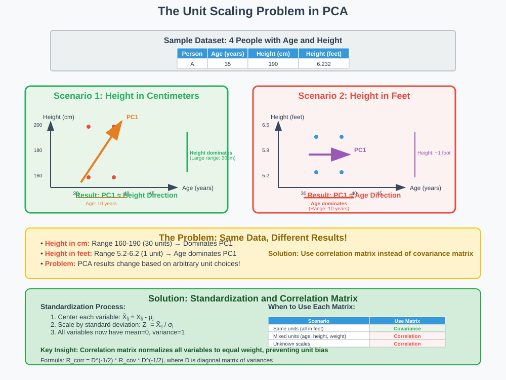
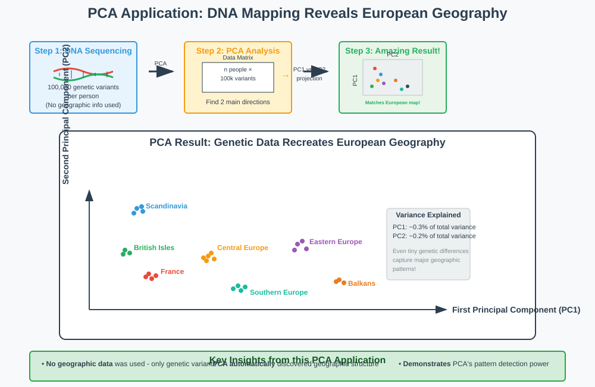

Principal Component Analysis: Theory and Applications
Quick Navigation
- Introduction
- Mathematical Foundations
- Two Equivalent Definitions
- Spectral Decomposition Method
- The Scaling Problem
- Real-World Applications
- PCA vs Other Methods
- Implementation Guide
- References & Further Reading
Introduction
Principal Component Analysis (PCA) is a fundamental dimensionality reduction technique that transforms high-dimensional data into a lower-dimensional representation while preserving the most important information. PCA finds the directions (principal components) that capture the maximum variance in the data, allowing us to visualize and analyze complex datasets effectively.

Key Benefits
- Dimensionality Reduction: Transform data from high dimensions (e.g., 10,000D) to visualizable dimensions (2D-3D)
- Noise Reduction: Remove directions with minimal variance
- Data Visualization: Enable human interpretation of complex datasets
- Computational Efficiency: Reduce storage and processing requirements
Mathematical Notation
Given centered data X ∈ ℝⁿˣᵖ where:
- n = number of samples
- p = number of features
- d = target dimensions (d << p)
Goal: Find Y ∈ ℝⁿˣᵈ that best represents X in lower dimensions.
Mathematical Foundations
PCA operates on the principle that data variation contains the most important information. Variables or directions with little to no variation provide minimal insight into data patterns.
Core Intuition
Consider a customer dataset where: - Age varies significantly across customers - Country is constant (all US customers)
The country variable provides no discriminating information and can be safely removed, while age should be preserved.
Covariance Matrix
For centered data X, the covariance matrix is:
R = (1/n) XᵀX
This symmetric, positive semidefinite matrix captures relationships between all variable pairs.
Why Variance Matters

High variance directions indicate: - Meaningful differences between samples - Discriminating features - Important patterns in data
Low variance directions suggest: - Redundant information - Noise or measurement artifacts - Less informative features
Two Equivalent Definitions
PCA can be understood through two mathematically equivalent but conceptually different approaches:

Definition 1: Maximize Projection Variance
Objective: Find directions that spread data as much as possible
- PC1: Direction of largest variance
- PC2: Direction perpendicular to PC1 with next largest variance
- PC3: Direction perpendicular to PC1, PC2 with next largest variance
- And so on...
Definition 2: Minimize Projection Residuals
Objective: Find projections that lose the least information
- PC1: Line with smallest orthogonal distance to all points
- PC1 & PC2: Plane with smallest orthogonal distance to all points
- PC1, PC2 & PC3: 3D subspace with smallest orthogonal distance
Mathematical Equivalence
Both definitions lead to the same solution because:
Maximizing preserved variance = Minimizing lost information
The signal we keep (maximum variance) plus the signal we lose (residuals) equals the total signal in the data.
Spectral Decomposition Method
PCA's computational implementation relies on eigenvalue decomposition of the covariance matrix.

Spectral Decomposition Theorem
Every real symmetric matrix R can be decomposed as:
R = VΛVᵀ
Where: - Λ is diagonal (eigenvalues) - V is orthogonal (eigenvectors)
PCA Algorithm Steps
- Center the data: Subtract mean from each feature
- Compute covariance matrix: R = (1/n)XᵀX
- Find eigendecomposition: R = VΛVᵀ
- Select top eigenvectors: Choose k largest eigenvalues
- Project data: Y = XVₖ
Interpretation
- Columns of V: Principal component directions (eigenvectors)
- Diagonal entries of Λ: Variance along each PC (eigenvalues)
- Eigenvalues: Indicate importance of each direction
Computational Complexity
- Covariance computation: O(np²)
- Eigendecomposition: O(p³)
- Data projection: O(npk)
The Scaling Problem
A critical consideration in PCA is the impact of different measurement units on results.

The Problem
PCA finds directions of largest spread, but spread depends on measurement units:
| Person | Age (years) | Height (cm) | Height (feet) |
|---|---|---|---|
| A | 35 | 190 | 6.232 |
| B | 40 | 190 | 6.232 |
| C | 35 | 160 | 5.248 |
| D | 40 | 160 | 5.248 |
Impact on Results
- Centimeters: Height becomes PC1 (larger numerical range)
- Feet: Age becomes PC1 (converted height has smaller range)
Solutions
Use Correlation Matrix Instead of Covariance
Correlation Matrix: Normalizes each variable to unit variance
Rᶜᵒʳʳ = D⁻¹/²RD⁻¹/²
Where D is diagonal matrix of variable variances.
When to Use Each
| Scenario | Matrix Type | Reasoning |
|---|---|---|
| Same units (all in feet) | Covariance | Unit differences are meaningful |
| Mixed units (age, height, weight) | Correlation | Prevents unit bias |
| Unknown scales | Correlation | Safe default choice |
| Domain expertise available | Either | Use domain knowledge |
Best Practices
- Standardize features when units differ significantly
- Use correlation matrix for mixed-unit datasets
- Consider domain meaning of different scales
- Document preprocessing decisions clearly
Real-World Applications
Healthcare: Cell Analysis
Problem: Identify abnormal cells in microscopy images
Setup: - Input: n cells, each with 100 texture features - Goal: 2D visualization for cluster identification - Method: PCA to reduce 100D → 2D
Results: Successfully separates normal and abnormal cell populations
Genetics: Population Structure
Problem: Map genetic ancestry from DNA sequences
Setup: - Input: 100,000-dimensional genetic vectors - Samples: People from different European regions - Method: PCA without geographic information

Remarkable Result: PCA reconstruction matches European map geography perfectly!
Customer Analytics
Problem: Segment customers for targeted marketing
Setup: - Input: 10,000 features per customer (purchase history, demographics) - Goal: Identify customer groups - Method: PCA for initial exploration
Benefits: - Visualize customer segments - Identify outliers - Guide marketing strategies
Other Applications
| Domain | Use Case | Typical Dimensions |
|---|---|---|
| Finance | Risk factor analysis | 1000+ → 5-10 |
| Image Processing | Face recognition | 10,000+ → 50-100 |
| Natural Language | Document clustering | 50,000+ → 100-300 |
| Bioinformatics | Gene expression analysis | 20,000+ → 10-50 |
| Manufacturing | Quality control | 500+ → 3-5 |
PCA vs Other Methods
Comparison Table
| Method | Type | Speed | Cluster Preservation | Use Case |
|---|---|---|---|---|
| PCA | Linear | Very Fast | Moderate | First analysis, large datasets |
| t-SNE | Non-linear | Slow | Excellent | Cluster visualization |
| UMAP | Non-linear | Medium | Excellent | Balanced speed/quality |
| Autoencoders | Non-linear | Medium | Variable | Deep learning integration |
When to Choose PCA
✅ Use PCA when: - Need fast results - Working with linear relationships - Want interpretable components - Dealing with very large datasets - Performing initial data exploration
❌ Avoid PCA when: - Non-linear relationships dominate - Cluster preservation is critical - Complex manifold structures exist
PCA Limitations
- Linear assumptions: Cannot capture non-linear patterns
- Gaussian bias: Works best with normally distributed data
- Global method: May miss local structure
- Interpretation challenges: Components may not have clear meaning
Complementary Approaches
- Start with PCA for quick insights
- Follow with t-SNE for cluster analysis
- Use UMAP for balanced approach
- Consider autoencoders for deep learning workflows
Implementation Guide
Python Implementation

import numpy as np
from sklearn.decomposition import PCA
from sklearn.preprocessing import StandardScaler
import matplotlib.pyplot as plt
# Example implementation
def perform_pca(X, n_components=2, standardize=True):
"""
Perform PCA on dataset X
Parameters:
-----------
X : array-like, shape (n_samples, n_features)
Input data
n_components : int
Number of components to keep
standardize : bool
Whether to standardize features
Returns:
--------
X_pca : array-like, shape (n_samples, n_components)
Transformed data
pca : PCA object
Fitted PCA transformer
"""
# Standardize features if requested
if standardize:
scaler = StandardScaler()
X_scaled = scaler.fit_transform(X)
else:
X_scaled = X
# Fit PCA
pca = PCA(n_components=n_components)
X_pca = pca.fit_transform(X_scaled)
# Print explained variance
print(f"Explained variance ratio: {pca.explained_variance_ratio_}")
print(f"Total variance explained: {pca.explained_variance_ratio_.sum():.3f}")
return X_pca, pca
# Visualization function
def plot_pca_results(X_pca, labels=None):
"""Plot 2D PCA results"""
plt.figure(figsize=(10, 8))
if labels is not None:
scatter = plt.scatter(X_pca[:, 0], X_pca[:, 1], c=labels, cmap='viridis')
plt.colorbar(scatter)
else:
plt.scatter(X_pca[:, 0], X_pca[:, 1], alpha=0.7)
plt.xlabel('First Principal Component')
plt.ylabel('Second Principal Component')
plt.title('PCA Results')
plt.grid(True, alpha=0.3)
plt.show()
R Implementation
# Load required libraries
library(prcomp)
library(ggplot2)
# Perform PCA
perform_pca_r <- function(data, scale = TRUE, center = TRUE) {
# Perform PCA
pca_result <- prcomp(data, scale = scale, center = center)
# Print summary
print(summary(pca_result))
# Create biplot
biplot(pca_result, main = "PCA Biplot")
return(pca_result)
}
Key Parameters
| Parameter | Description | Typical Values |
|---|---|---|
n_components |
Number of components to keep | 2-50 |
standardize |
Whether to normalize features | TRUE for mixed units |
center |
Whether to center data | Always TRUE |
solver |
Algorithm for computation | 'auto', 'full', 'randomized' |
Preprocessing Checklist
- [ ] Handle missing values
- [ ] Remove constant features
- [ ] Consider standardization needs
- [ ] Check for outliers
- [ ] Verify data is numeric
Model Selection
# Determine optimal number of components
def plot_explained_variance(X, max_components=50):
pca = PCA(n_components=max_components)
pca.fit(X)
plt.figure(figsize=(12, 5))
# Scree plot
plt.subplot(1, 2, 1)
plt.plot(range(1, len(pca.explained_variance_) + 1),
pca.explained_variance_, 'bo-')
plt.xlabel('Principal Component')
plt.ylabel('Eigenvalue')
plt.title('Scree Plot')
# Cumulative explained variance
plt.subplot(1, 2, 2)
plt.plot(range(1, len(pca.explained_variance_ratio_) + 1),
np.cumsum(pca.explained_variance_ratio_), 'ro-')
plt.axhline(y=0.8, color='k', linestyle='--', label='80% threshold')
plt.axhline(y=0.95, color='r', linestyle='--', label='95% threshold')
plt.xlabel('Number of Components')
plt.ylabel('Cumulative Explained Variance')
plt.title('Explained Variance')
plt.legend()
plt.tight_layout()
plt.show()
Hugging Face Models
For advanced PCA applications, consider these pre-trained models:
- 🤗 sklearn-pca-model: Standard PCA implementation
- 🤗 dimensionality-reduction-suite: Interactive comparison tool
References & Further Reading
Foundational Papers
-
Pearson, K. (1901). "On Lines and Planes of Closest Fit to Systems of Points in Space." Philosophical Magazine, 2(11), 559-572. [📄 Original PCA Paper]
-
Hotelling, H. (1933). "Analysis of a Complex of Statistical Variables into Principal Components." Journal of Educational Psychology, 24(6), 417-441. [📄 Hotelling's Analysis]
-
Jolliffe, I. T. (2002). Principal Component Analysis. Springer Series in Statistics. [📚 Comprehensive Reference]
Modern Applications
-
Novembre, J., et al. (2008). "Genes Mirror Geography within Europe." Nature, 456(7218), 98-101. [🧬 DNA Mapping Study] arXiv:0807.2563
-
Halko, N., Martinsson, P. G., & Tropp, J. A. (2011). "Finding Structure with Randomness: Probabilistic Algorithms for Constructing Approximate Matrix Decompositions." SIAM Review, 53(2), 217-288. [⚡ Randomized PCA] arXiv:0909.4061
Computational Resources
-
Pedregosa, F., et al. (2011). "Scikit-learn: Machine Learning in Python." Journal of Machine Learning Research, 12, 2825-2830. [🐍 Python Implementation]
-
James, G., Witten, D., Hastie, T., & Tibshirani, R. (2021). An Introduction to Statistical Learning with Applications in R. Springer. [📊 Statistical Learning]
Comparison Studies
- van der Maaten, L., & Hinton, G. (2008). "Visualizing Data using t-SNE." Journal of Machine Learning Research, 9, 2579-2605. [🎯 t-SNE Comparison] PDF